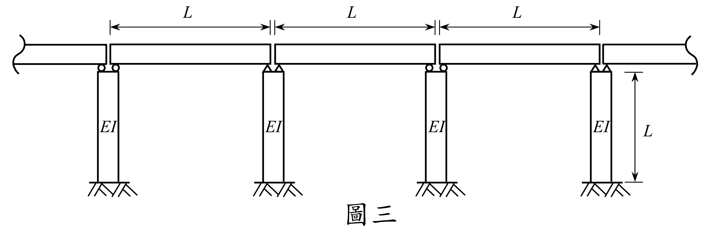
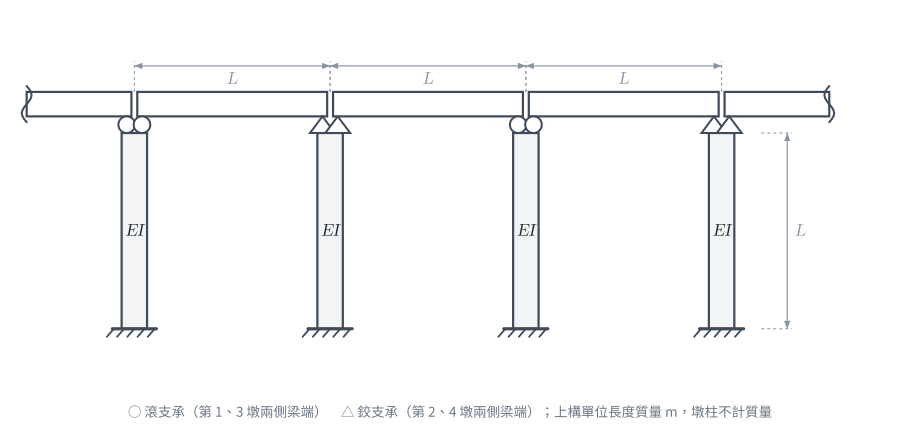
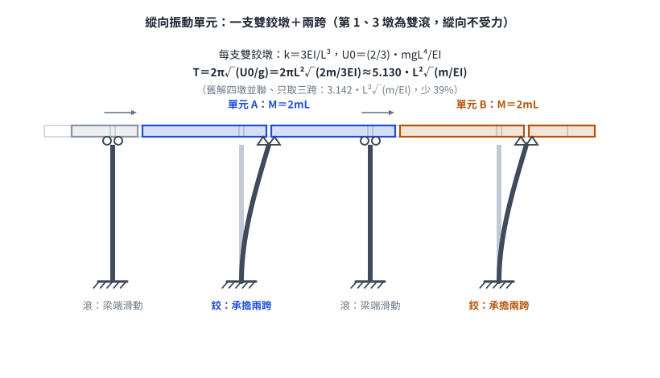

📄 題目正本：考卷原文・附圖・判讀清單（已確認）
SD-2010-3 題目正本
本檔只記錄考卷上寫了什麼、圖上畫了什麼，不含任何解法。解析見同資料夾
SD-2010-3.md。
判讀清單經使用者確認前，狀態為「待確認」；確認後本檔原則上不再修改（改動須回考卷原圖並記 log）。
| 項目 | 內容 |
|---|---|
| 考卷 | raw/exams/SD-2010_結構動力分析與耐震設計.pdf，第 1 頁（正面），第三題 |
| 考年 | 2010（民國99年）專技高考結構工程技師「結構動力分析與耐震設計」 |
| 配分 | 25 分 |
| 附圖 | SD-2010-3-fig-1.png（舊擷取，第三跨梁上有游標）、SD-2010-3-fig-2.png（2026-11-16 由考卷 500 dpi 重擷取） |
| 判讀狀態 | 已確認（2026-11-16，使用者授權依 Claude 建議；#1 計算方向定案為橋軸向（縱向））。原轉錄：2026-11-16；PyMuPDF 110 dpi 整頁＋500 dpi 局部放大，PDF 文字層核對原文；盲讀於開啟解析前完成 |
1. 考卷原文（逐字）
三、圖三為簡支橋梁配置的示意圖，若上構單位長度質量為 $m$；墩柱之 $EI$ 值為常數，不考慮墩柱之質量，亦不考慮桿件軸向之伸長縮短。試選取橋梁振動單元，並應用橋梁耐震設計規範公式（如下），計算橋梁周期 $T$。（25 分）
$\beta=\int w(x)U(x)\,dx$，$\gamma=\int w(x)[U(x)]^2\,dx$，$T=2\pi\sqrt{\dfrac{\gamma}{\beta g}}$
其中 $w(x)$ 為橋梁結構單位長度靜載重，$U(x)$ 為橋梁變形。
（「周期」照考卷原文）
2. 考卷給的公式、附表與參數
- 考卷給的公式（題文）：$\beta=\int w(x)U(x)\,dx$，$\gamma=\int w(x)[U(x)]^2\,dx$，$T=2\pi\sqrt{\gamma/(\beta g)}$。
- 給定：上構單位長度質量 $m$；墩柱 $EI$ 為常數；跨長 $L$、墩柱高 $L$（圖上）。
- 不考慮：墩柱質量、桿件軸向伸長縮短。
- 考卷沒有給：計算方向（縱向或橫向）、上構 $EI$、數值；支承的文字說明（只在圖上以符號表示）。
- 卷首注意事項：㈠可以使用電子計算器。㈡不必抄題，作答時請將試題題號及答案依照順序寫在試卷上，於本試題上作答者，不予計分。考試時間：2 小時。
3. 附圖

證據圖 SD-2010-3-fig-2.png（500 dpi 重擷取；舊圖 SD-2010-3-fig-1.png 內容相同，第三跨梁上有游標）
圖面文字照錄：L、L、L（跨長三處）；EI（四支墩柱各一）；L（柱高）；圖三
4. 判讀清單
| # | 項目 | 判讀 | 圖上／題文依據 | 把握 |
|---|---|---|---|---|
| 1 | 計算方向 | 橋軸向（縱向）。定案理由：考卷只畫立面、支承以縱向的滾／鉸區分，題文未提橫向 | 題文未指定方向；圖為立面 | 不確定（影響答案）；使用者授權依建議確認 |
| 2 | 墩頂支承配置 | 由左起第 1、3 墩：兩側梁端都是滾支承（各兩小圓）；第 2、4 墩：兩側梁端都是鉸支承（各兩小三角形） | 500 dpi：第 1、3 墩頂各兩圓，第 2、4 墩頂各兩三角 | 確定 |
| 3 | 每跨梁的支承 | 中間三跨各為一端滾、一端鉸的簡支梁：第一跨左滾右鉸、第二跨左鉸右滾、第三跨左滾右鉸；左端延續段在第 1 墩為滾，右端延續段在第 4 墩為鉸 | 由 #2 與梁段在墩頂斷開 | 確定（解讀） |
| 4 | 墩柱底 | 固定 | 柱底橫線加斜剖線 | 確定 |
| 5 | 墩柱頂與梁的連接 | 經支承（鉸或滾）與梁相連，墩頂不受梁的轉動束制 | 支承符號 | 確定（解讀） |
| 6 | 跨長 | 中間三跨皆 $L$，量至相鄰墩頂支承中點（梁縫） | 尺寸線端點對齊梁縫 | 確定 |
| 7 | 墩柱高 | $L$，由墩頂（支承下緣）量至柱底 | 最右墩右側尺寸線上端對齊墩頂、下端對齊柱底 | 確定 |
| 8 | 墩柱 | 四支皆 $EI$ 常數，不計質量、不計軸向變形 | 圖上 EI、題文 | 確定 |
| 9 | $m$ 與 $w(x)$ | $m$ 為上構單位長度質量；$w(x)$ 為單位長度靜載重，題目沒有直接給 $w$ 的數值，與 $m$ 的關係由考生處理 | 題文 | 確定（解讀） |
| 10 | 兩端延續段 | 波浪折斷線表示橋梁向兩側延續，延續段長度與另一端支承未畫 | 兩端波浪線 | 確定 |
| 11 | 所求 | 選取振動單元並以題給公式計算 $T$ | 題文 | 確定 |
| 12 | 考卷沒有給 | 計算方向、上構撓曲勁度、數值、$g$ 值 | 題文 | 確定 |
轉錄：2026-11-16（X-G1 題目正本推廣：SD-U2-3／SD-U1-1）
確認：2026-11-16 使用者授權依 Claude 建議確認（X-G1，關卡一）
考題編號：SD-2010-3
主分類： SD-U2-3 橋梁耐震設計規範
副分類： SD-U1-3 單自由度、多自由度系統之動態分析及應用
分析方法： 橋梁耐震規範 Rayleigh 法（靜力位移函數法）：依墩頂滾／鉸支承選取縱向振動單元＋積分求橋梁基本周期
標籤： 橋梁耐震規範 Rayleigh法 振動單元 靜力位移法 縱向振動 滾支承與鉸支承 剛性橋面版假設 懸臂橋墩 均布質量 橋梁基本周期 積分公式 Stodola法
1. 題目（考卷原文見題目正本）
考卷原文、公式／附表、附圖與判讀清單（已確認）見
SD-2010-3-problem.md。本節只列解題時最容易讀錯的地方與本解使用的記號；題意以題目正本為準。

重繪自考卷附圖，依題目正本判讀清單；本圖攔下的判讀錯誤：第 1、3 墩頂是雙滾支承、第 2、4 墩頂是雙鉸支承，並非四墩都與梁銷接；考卷也沒有指定橫向。
常見誤讀
| 項目 | 正確判讀 | 常見誤讀 |
|---|---|---|
| 計算方向 | 橋軸向（縱向）（判讀 #1，使用者授權依建議確認） | 加字成「$U(x)$ 為橋梁橫向變形」（考卷只寫「橋梁變形」；本庫舊解 §1，2026-11-16 已勘誤） |
| 墩頂支承 | 第 1、3 墩兩側梁端皆滾支承，第 2、4 墩兩側梁端皆鉸支承；每跨一端滾、一端鉸（判讀 #2、#3） | 四墩都與梁銷接、整座橋 4 墩一起側移，得 $T=\pi L^2\sqrt{m/EI}$（本庫舊解，2026-11-16 已勘誤） |
| 振動單元範圍 | 橋梁向兩端延續（波浪折斷線），不是只有三跨（判讀 #10） | 全橋只有 $3L$、質量 $3mL$ |
| 柱高 | $L$，由墩頂支承下緣量到柱底（判讀 #7） | — |
| 墩柱 | 不計質量、不計軸向變形（題文） | — |
本解記號： $m$ 上構單位長度質量、$w=mg$；$U(x)$ 在 $w(x)$ 作用下的靜變形；墩柱側向勁度依支承條件判定。
2. 考題核心精神與出題者意圖（Core Concepts & Examiner's Intent）
核心觀念： 橋梁耐震設計規範的週期公式 $T=2\pi\sqrt{\gamma/(\beta g)}$ 是 Rayleigh 法：把上構重量 $w(x)$ 沿計算方向當靜力施加，得到的靜變形 $U(x)$ 當作振態形狀。本題的關鍵在「選取橋梁振動單元」——簡支橋梁各跨由支承分開，哪些墩柱、哪些跨會一起動，要由墩頂支承的滾／鉸配置決定。
出題者意圖：
- 能否從圖上的支承符號判斷縱向力的傳遞：滾支承不傳縱向力，鉸支承傳縱向力（題目正本判讀 #2、#3）。
- 能否選出振動單元：第 2、4 墩頂兩側梁端都是鉸支承，每支這種墩柱承擔兩跨上構；第 1、3 墩兩側都是滾支承，縱向不受力。
- 墩頂經支承與梁相連、不受梁的轉動束制 → 墩柱是懸臂，$k=3EI/L^3$。
- 規範積分在剛體平移下化成乘法。
關鍵判斷： 計算方向取橋軸向（縱向）（判讀 #1）。振動單元＝一支雙鉸墩柱＋其上兩跨上構（質量 $2mL$）；兩跨在此墩縱向一起平移，$U(x)=U_0$（常數）。
3. 解題戰略地圖與陷阱分析（Strategic Roadmap & Trap Analysis）
作戰計畫：
- 由墩頂支承符號判斷縱向傳力路徑，選出振動單元（一支雙鉸墩＋兩跨）
- 墩柱邊界：底固定、頂經鉸支承 → 懸臂 $k=3EI/L^3$
- 把振動單元的上構重量 $w=mg$ 沿縱向施加，求 $U_0$
- 代入規範式求 $\beta$、$\gamma$、$T$
關鍵陷阱：
| # | 陷阱 | 說明 | 應對策略 |
|---|---|---|---|
| ❶ | 沒看墩頂支承符號 | 第 1、3 墩頂是兩個小圓（滾），第 2、4 墩頂是兩個小三角（鉸）。把四墩都當成與梁銷接、四墩並聯，週期少算約 39%（舊解 $\pi L^2\sqrt{m/EI}$） | 每支墩柱先問：它頂上的梁端能不能傳縱向力 |
| ❷ | 振動單元只取「三跨」 | 圖兩端有波浪折斷線，橋梁向兩側延續；不能把全橋當成 $3L$、4 墩 | 以重複出現的「一支雙鉸墩＋兩跨」為單元 |
| ❸ | 墩柱邊界條件用錯 | 墩頂經支承連接、上構不束制墩頂轉動 → 懸臂 $3EI/L^3$；誤用雙固定 $12EI/L^3$ 會差 4 倍 | 看支承：鉸支承不傳彎矩 |
| ❹ | 公式漏掉 $g$ | $T=2\pi\sqrt{\gamma/(\beta g)}$，$\gamma/\beta$ 是長度，除以 $g$ 才是時間平方 | 化簡到 $T=2\pi\sqrt{U_0/g}$ 檢查量綱 |
3.5 變數層次分析（Variable Hierarchy Analysis）
複習提示：第一次解題後，在每個卡住的知識點旁標記
⚠；第二次複習時只看有⚠的項目。
最終目標
橋梁縱向基本振動周期 T
本題關鍵公式（依計算順序）
$\boxed{\cdot}$ = 需由前步驟推導，非題目直接給定的變數
$$\text{Step 1（振動單元）: } \text{1 支雙鉸墩（第 2 或第 4 墩）＋兩跨上構},\quad M=2mL$$
$$\text{Step 2（墩柱懸臂勁度）: } k = \frac{3EI}{L^3}$$
$$\text{Step 3（縱向靜變形）: } U_0 = \frac{mg\cdot 2L}{\boxed{k}} = \frac{2mgL^4}{3EI}$$
$$\text{Step 4（積分化簡）: } \beta = mg\,\boxed{U_0}\cdot 2L,\quad \gamma = mg\,\boxed{U_0}^2\cdot 2L$$
$$\text{Step 5（周期）: } T = 2\pi\sqrt{\frac{\gamma}{\beta g}} = 2\pi\sqrt{\frac{\boxed{U_0}}{g}} = 2\pi L^2\sqrt{\frac{2m}{3EI}}$$
L1：題目直接給定
| 符號 | 數值 | 說明 |
|---|---|---|
| $m$ | — | 上構單位長度質量 |
| $EI$ | 常數 | 墩柱抗彎勁度，不計墩柱質量、不計軸向變形 |
| $L$ | — | 跨長，也是墩柱高（判讀 #6、#7） |
| 支承 | 圖上符號 | 第 1、3 墩雙滾；第 2、4 墩雙鉸（判讀 #2） |
L2：需知識點推導
Step 1：振動單元
| 項目 | 公式／來源 | 卡關? |
|---|---|---|
| 傳縱向力的墩 | 只有第 2、4 墩（鉸支承）；第 1、3 墩為滾支承，縱向不受力 | |
| 每支雙鉸墩承擔 | 兩側各一跨（每跨在此墩是鉸端、在另一墩是滾端）→ $2L$ 上構，$M=2mL$ |
Step 2：墩柱勁度
| 符號 | 公式／來源 | 卡關? |
|---|---|---|
| $k$ | $3EI/L^3$（底固定、頂經鉸支承＝懸臂） |
Step 3：靜變形與積分
| 符號 | 公式／來源 | 卡關? |
|---|---|---|
| $U_0$ | $mg\cdot2L/k = 2mgL^4/(3EI)$（兩跨縱向剛體平移，$U(x)$ 為常數） | |
| $\beta$ | $\int w U\,dx = 2mgLU_0$ | |
| $\gamma$ | $\int w U^2dx = 2mgLU_0^2$ | |
| $\gamma/(\beta g)$ | $U_0/g = 2mL^4/(3EI)$ |
L3：深層知識（不懂就卡住）
| 知識點 | 說明 | 卡關? |
|---|---|---|
| 滾支承與鉸支承的傳力 | 滾支承只傳垂直力，縱向可自由滑動；鉸支承傳垂直與水平力、不傳彎矩。簡支橋梁的縱向地震力只經鉸支承（固定支承）傳到墩柱 | |
| 振動單元 | 規範式要以「會一起振動的部分」為單元。各跨簡支、由支承分開時，振動單元由支承配置決定，不一定是整座橋 | |
| 規範式＝Rayleigh 法 | 以重量當靜力得到的變形當振態，令最大動能＝最大位能：$\omega^2=g\int wU\,dx/\int wU^2dx$ | |
| 懸臂柱 vs 雙固定柱 | 墩頂經支承連接，上構不束制墩頂轉動 → $3EI/L^3$；若墩頂與上構剛接 → $12EI/L^3$（差 4 倍） |
4. 步驟化詳細計算過程（Step-by-Step Detailed Calculation）
Step 1：選取振動單元
計算方向取橋軸向（縱向）（題目正本判讀 #1）。由圖三墩頂支承符號（判讀 #2、#3）：
- 第 1、3 墩：兩側梁端都是滾支承 → 縱向不傳力，這兩支墩柱縱向不參與。
- 第 2、4 墩：兩側梁端都是鉸支承 → 第一跨（左滾右鉸）與第二跨（左鉸右滾）的縱向慣性力都傳到第 2 墩；第三跨與右側延續段傳到第 4 墩。
振動單元：一支雙鉸墩柱（第 2 或第 4 墩）＋其上兩跨上構，上構質量 $M=m\cdot2L=2mL$。
兩跨在該墩一起縱向平移，梁不計軸向變形 → 振動單元內 $U(x)=U_0$（常數）。

圖解：縱向振動單元（位移放大示意）。本圖攔下的錯誤：把四墩都當成與梁銷接、四墩並聯、全橋只取三跨（舊解 T＝3.142 L²√(m/EI)）；滾支承的墩縱向不受力，每支雙鉸墩承擔兩跨，T＝5.130 L²√(m/EI)。
Step 2：墩柱縱向勁度
墩柱底固定；頂端經鉸支承與梁相連，上構不束制墩頂轉動 → 懸臂柱：
$$k = \frac{3EI}{L^3}$$
Step 3：縱向靜變形 $U(x)$
把振動單元上構的單位長度靜載重 $w(x)=mg$ 沿縱向施加，總力 $mg\cdot2L$ 全部由該墩承受：
$$U_0 = \frac{mg\cdot2L}{3EI/L^3} = \frac{2mgL^4}{3EI}$$
Step 4：計算 $\beta$、$\gamma$
$$\beta = \int_{2L} w(x)\,U(x)\,dx = mg\cdot U_0\cdot 2L = 2mgLU_0$$
$$\gamma = \int_{2L} w(x)\,[U(x)]^2\,dx = mg\cdot U_0^2\cdot 2L = 2mgLU_0^2$$
Step 5：計算周期
$$\frac{\gamma}{\beta g} = \frac{U_0}{g} = \frac{2mL^4}{3EI}$$
$$\boxed{T = 2\pi\sqrt{\frac{\gamma}{\beta g}} = 2\pi L^2\sqrt{\frac{2m}{3EI}} \approx 5.130\,L^2\sqrt{\frac{m}{EI}}}$$
5. 關鍵爭議點與進階探討（Critical Issues & Advanced Discussion）
5.1 直接驗算（SDOF 等效法）
振動單元等效為單自由度：質量 $M=2mL$（墩柱不計質量）、勁度 $k=3EI/L^3$：
$$T = 2\pi\sqrt{\frac{M}{k}} = 2\pi\sqrt{\frac{2mL\cdot L^3}{3EI}} = 2\pi L^2\sqrt{\frac{2m}{3EI}} \checkmark$$
與規範式結果一致。剛體平移時 $U(x)$ 為常數，規範式恰好等於單自由度精確解（驗算腳本另以有限元素懸臂墩求頂端勁度 $3.000EI/L^3$、特徵值週期係數 5.130，一致）。
5.2 為何 $\gamma/(\beta g)=U_0/g$
$U(x)=U_0$ 為常數時：
$$\frac{\gamma}{\beta g} = \frac{U_0^2\int w\,dx}{U_0\,g\int w\,dx} = \frac{U_0}{g}$$
即 $T=2\pi\sqrt{U_0/g}$：週期只由「重量當水平力時的位移」決定。這也是規範式量綱的檢查方式。
5.3 若計算方向取橫向（對照）
考卷沒有指定方向（判讀 #1 定案縱向）。若取橫向，一般滾、鉸支承都束制橫向位移，每跨兩端各由一支墩柱承擔一半，橋梁向兩端延續 → 每支墩柱分擔 $mL$：
$$T_{\text{橫}} = 2\pi\sqrt{\frac{mL\cdot L^3}{3EI}} = 2\pi L^2\sqrt{\frac{m}{3EI}} \approx 3.628\,L^2\sqrt{\frac{m}{EI}}$$
縱向週期是橫向的 $\sqrt2$ 倍，因為縱向只有一半的墩柱在受力。
5.4 舊解對照（2026-11-16 勘誤前）
舊解把四墩都當成與梁銷接、全橋只取三跨 $3L$、四墩並聯（$K=4\times3EI/L^3$、$M=3mL$），並寫成橫向：
$$T_{\text{舊}} = \pi L^2\sqrt{m/EI} \approx 3.142\,L^2\sqrt{m/EI}$$
比本解 $5.130\,L^2\sqrt{m/EI}$ 少約 39%（本解為舊解的 1.633 倍）。錯誤來源：沒看圖上墩頂的滾／鉸支承符號，也忽略兩端的延續段；即使改取橫向，也應是 $3.628\,L^2\sqrt{m/EI}$，舊解在兩種讀法下都不對。
5.5 規範版本
本題只用到考卷給的週期公式；現行公路橋梁耐震設計規範的週期公式仍是同一形式（2024 年考卷 SD-2024-4 引作規範（2-6）式，記號 $\zeta=\int wu^2dx$），不影響答案。
5.6 考場最佳策略
- 先看支承符號：標出哪些墩頂是鉸（傳縱向力）、哪些是滾。
- 寫出振動單元：一支雙鉸墩＋兩跨，$M=2mL$、$k=3EI/L^3$。
- 代公式：$U_0=2mgL^4/(3EI)$，$T=2\pi\sqrt{U_0/g}=2\pi L^2\sqrt{2m/(3EI)}$。
修正日期：2026-11-16（§1 改為指向題目正本，重繪附圖 figs/SD-2010-3-fig-1-problem.svg）
修正日期：2026-11-16（勘誤：判讀（墩頂支承配置）＋觀念模型（振動單元）。考卷圖三第 1、3 墩雙滾、第 2、4 墩雙鉸，橋梁向兩端延續；振動單元由「全橋 3 跨、4 墩並聯」改為「1 支雙鉸墩＋兩跨」，T 由 πL²√(m/EI)（3.142）改為 2πL²√(2m/(3EI))（5.130 L²√(m/EI)）；改 §2、§3、§3.5、§4、§5（舊值留 §5.4 對照），分析方法與標籤補字。驗證：scripts/fixes/2026-11-16_verify_SD-2010-3.py 符號推導與 FE 特徵值一致，MISMATCHES: 0）
修正日期：2026-11-16（非勘誤）圖解補繪：§4 Step 1 補縱向振動單元圖 figs/SD-2010-3-fig-3-unit.svg（腳本 gen_SD-2010-3.py，可重跑）